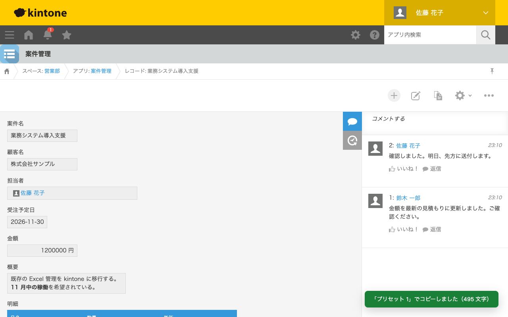
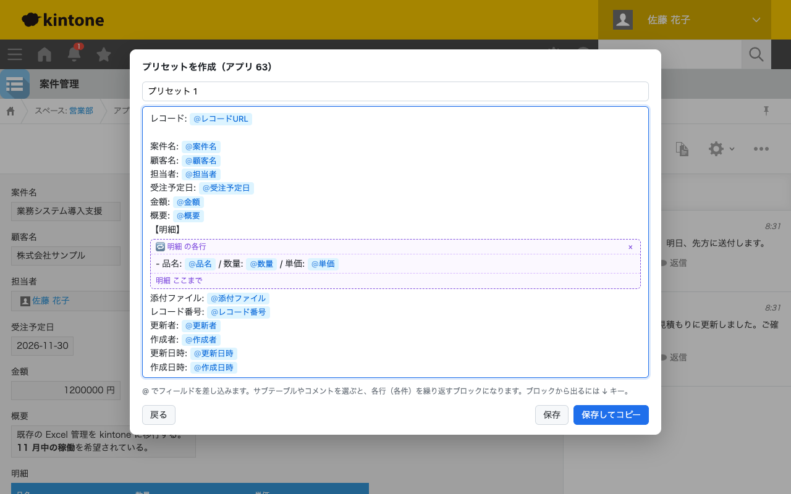
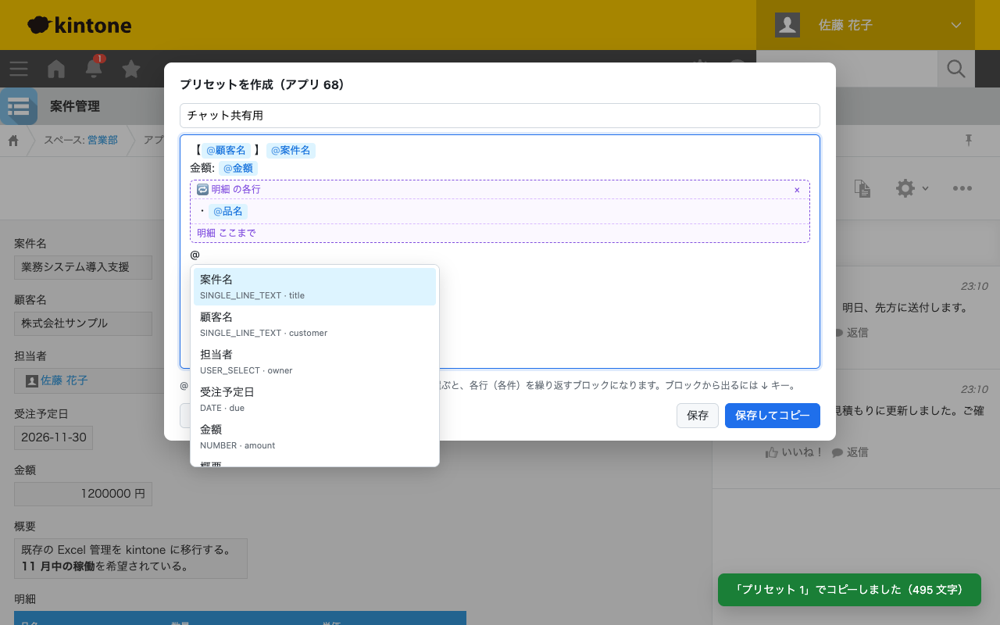
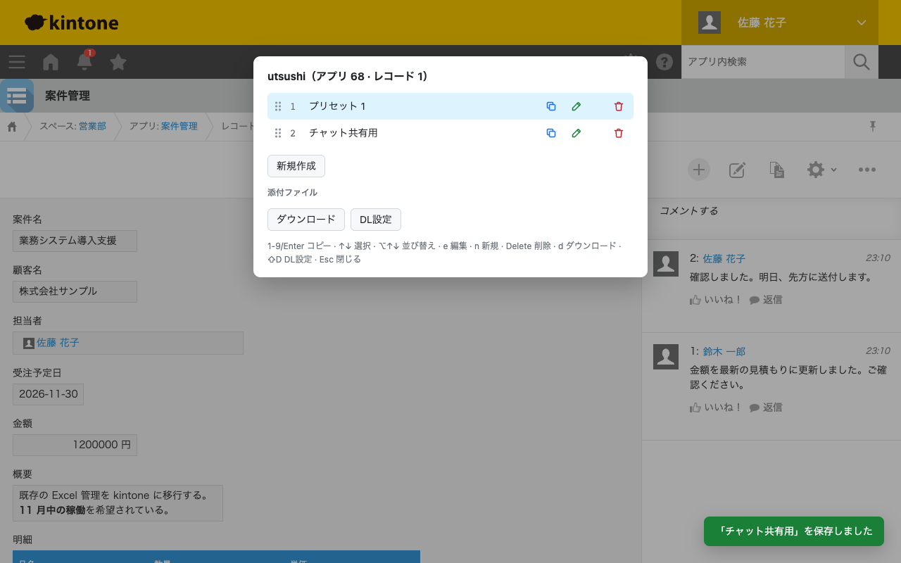
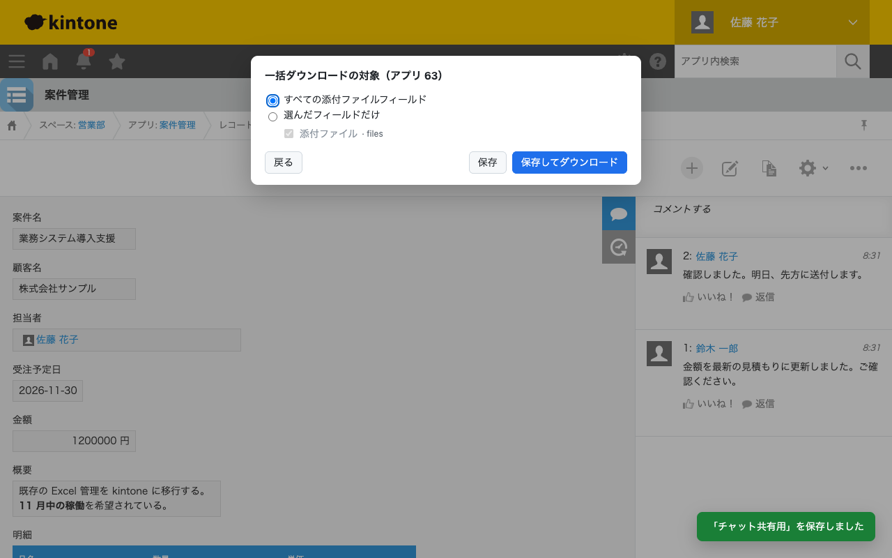
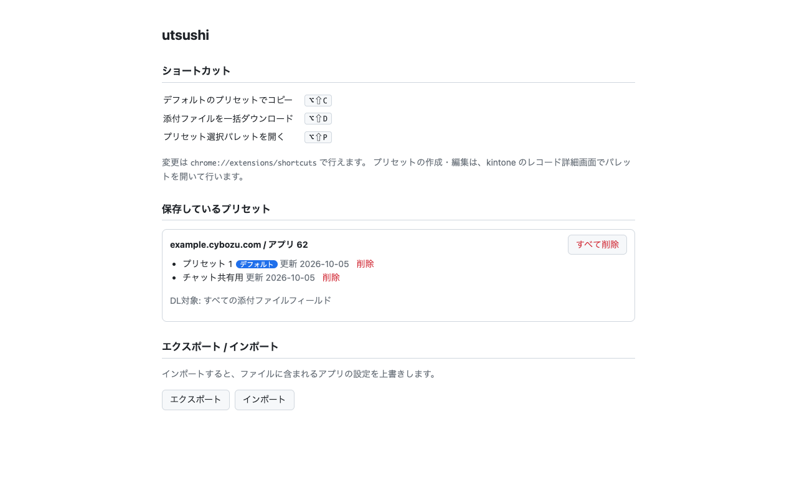

utsushi
kintone のレコードとコメントの内容をテンプレートに差し込んで、クリップボードにコピーする Chrome 拡張機能です。添付ファイルの一括ダウンロードもできます。

機能
- テンプレートでコピー レコードのフィールドとコメントを、自分で決めた形式（プリセット）に差し込んでクリップボードにコピーします。チャットへの共有や、報告書の下書きに使えます。
- @ で差し込むエディタ @ を打つとフィールドの候補が出ます。サブテーブルは行ごと、コメントは 1 件ずつ繰り返して書き出せます。
- 添付ファイルの一括ダウンロード レコードの添付ファイルを、サブテーブルの中のものも含めて、まとめてダウンロードします。
- アプリごとに保存 プリセットはアプリごとに複数作れます。オプション画面からエクスポート／インポートもできます。
インストール
-
GitHub のリリースから
utsushi-X.Y.Z-chrome.zipをダウンロードして展開します。 - Chrome で
chrome://extensionsを開き、右上の「デベロッパーモード」を有効にします。 - 「パッケージ化されていない拡張機能を読み込む」をクリックし、展開したフォルダを選びます。
初期設定は不要です。kintone にログインしていれば、そのまま使えます。
使い方
kintone のレコード詳細画面で ⌥ ⇧ C（Windows は Alt Shift C）を押すとメニューが開きます。もう一度押すと閉じます。メニューでは次のキーを使います。
| キー | 動作 |
|---|---|
| Enter | 選んでいるプリセットでコピー。開いた直後は先頭のプリセットを選んでいる。プリセットが無ければ作成画面を開く |
| 1〜9 | その番号のプリセットでコピー |
| d | 添付ファイルを一括ダウンロード |
| Esc | 閉じる |
ショートカットは chrome://extensions/shortcuts で変更できます。
プリセットを作る
はじめてコピーするときは、そのアプリの全フィールドを並べたテンプレートが入った作成画面が開きます。不要な行を消せば、そのまま使えます。

テンプレートの中で @（全角の ＠ も可）を打つと、差し込めるフィールドの候補が出ます。

- フィールドを選ぶと、ラベル付きのチップになります。
- サブテーブルを選ぶと、行ごとに繰り返すブロックになります。
- 「コメント」を選ぶと、コメントを 1 件ずつ繰り返すブロックになり、投稿者・日時・本文・メンションを差し込めます。
- レコードの URL、レコード ID、アプリ ID も差し込めます。
値は読みやすい形に整えて差し込みます。リッチエディターは Markdown、ユーザー選択は表示名、添付ファイルはファイル名、日時は YYYY-MM-DD HH:mm です。
コピーされるテキストの例
レコード: https://example.cybozu.com/k/62/show#record=1
案件名: 業務システム導入支援
顧客名: 株式会社サンプル
担当者: 佐藤 花子
受注予定日: 2026-11-30
金額: 1200000円
概要: 既存の Excel 管理を kintone に移行する。
**11 月中の稼働**を希望されている。
【明細】
- 品名: 要件定義 / 数量: 1 / 単価: 400000円
- 品名: アプリ構築 / 数量: 1 / 単価: 600000円
- 品名: 操作研修 / 数量: 2 / 単価: 100000円
添付ファイル: 見積書.txt, 仕様書.txt
レコード番号: 1
更新者: 佐藤 花子
作成者: 佐藤 花子
更新日時: 2026-10-05 08:42
作成日時: 2026-10-05 08:42
【コメント】
■ 鈴木 一郎（2026-10-05 08:42）
金額を最新の見積もりに更新しました。ご確認ください。
■ 佐藤 花子（2026-10-05 08:42）
確認しました。明日、先方に送付します。 プリセットを切り替える
メニューでは、↑ ↓ でプリセットを選び、e で編集、n で新規作成、Delete で削除します。 ⌥ ↑ ↓ か、行の左端のつまみのドラッグで並び替えられ、先頭のプリセットがメニューを開いた直後に選ばれます。

添付ファイルを一括ダウンロードする
メニューの d で、レコードの添付ファイルを
ダウンロード/kintone/{アプリID}-{レコードID}/ に保存します。対象のフィールドは、メニューの ⇧ D からアプリごとに選べます。コメントの添付ファイルは対象外です。

オプション画面
保存しているプリセットの一覧・削除と、JSON でのエクスポート／インポートができます。

データの扱い
レコードとコメントは、ログイン中の kintone から kintone の REST API で読み取ります。読み取った内容はクリップボードに書くだけで、kintone 以外のサーバーには送りません。プリセットはブラウザの拡張機能用の保存領域に保存します。詳しくはプライバシーポリシーを見てください。